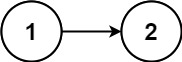

234. 回文链表
快慢指针找中点，把后半段原地反转，再让前半与反转后的后半从两端逐结点比较。
思路
fast一次两步、slow一次一步：fast到尾时slow正好停在前半的最后一个。- 从
slow.next起把后半段原地反转，prev是反转后的头（原来的尾）。 left从表头、right从prev出发逐结点比较；right先走到null，全相等就是回文（奇数长度时中间那个结点不用比）。
图解
最优解
1class Solution {2 public boolean isPalindrome(ListNode head) {3 // 1. 快慢指针找中点：fast 两步、slow 一步4 ListNode slow = head, fast = head;5 while (fast.next != null && fast.next.next != null) {6 slow = slow.next;7 fast = fast.next.next;8 }9 // 2. 反转 slow 之后的后半段，prev 是反转后的头10 ListNode prev = null, cur = slow.next;11 while (cur != null) {12 ListNode nxt = cur.next;13 cur.next = prev;14 prev = cur;15 cur = nxt;16 }17 // 3. 前半段与反转后的后半段逐结点比较18 ListNode left = head, right = prev;19 while (right != null) {20 if (left.val != right.val) return false;21 left = left.next;22 right = right.next;23 }24 return true;25 }26}题目
给你一个单链表的头节点 head ，请你判断该链表是否为回文链表。如果是，返回 true ；否则，返回 false 。
示例 1：
输入：head = [1,2,2,1] 输出：true
示例 2：

输入：head = [1,2] 输出：false
提示：
- 链表中节点数目在范围
[1, 105]内 0 <= Node.val <= 9
进阶：你能否用 O(n) 时间复杂度和 O(1) 空间复杂度解决此题？
题面取自力扣当前版本。
数据快照 2026-11-04。题面版权归力扣所有，本站点仅供本人学习使用，请勿对外发布。